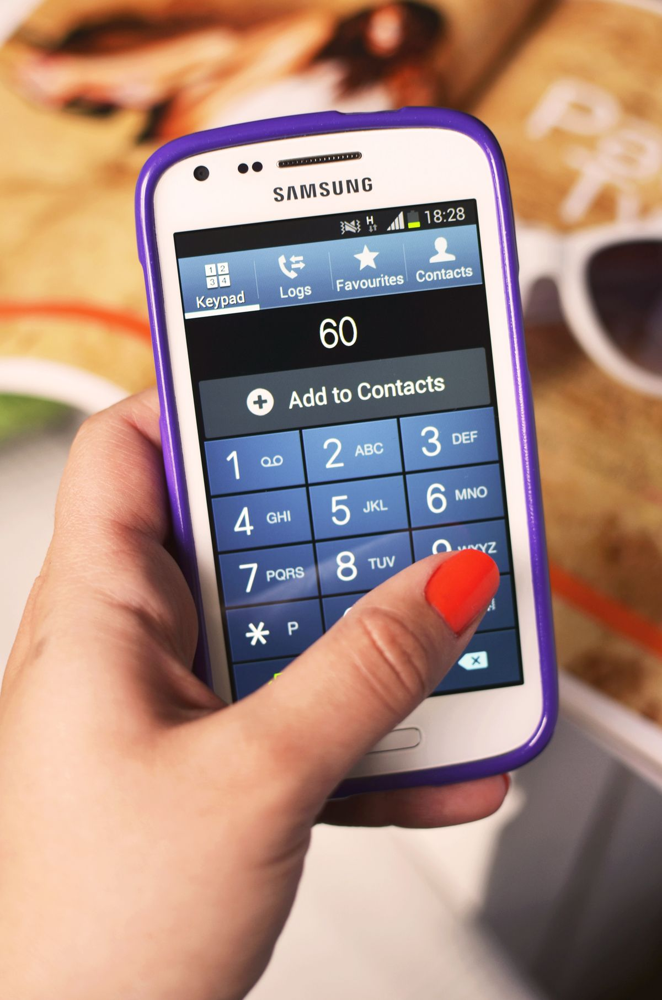
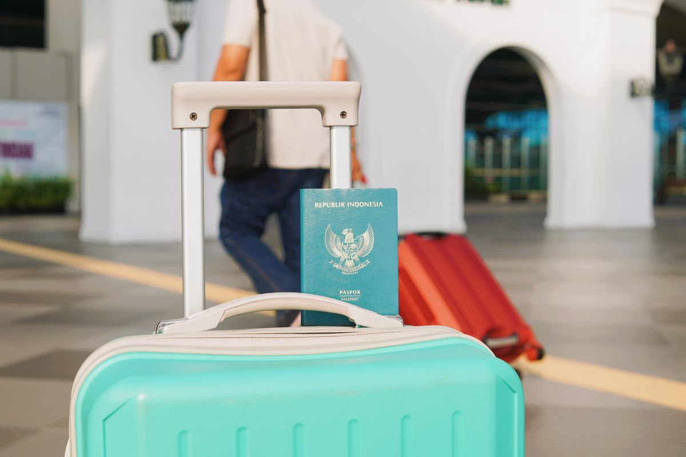
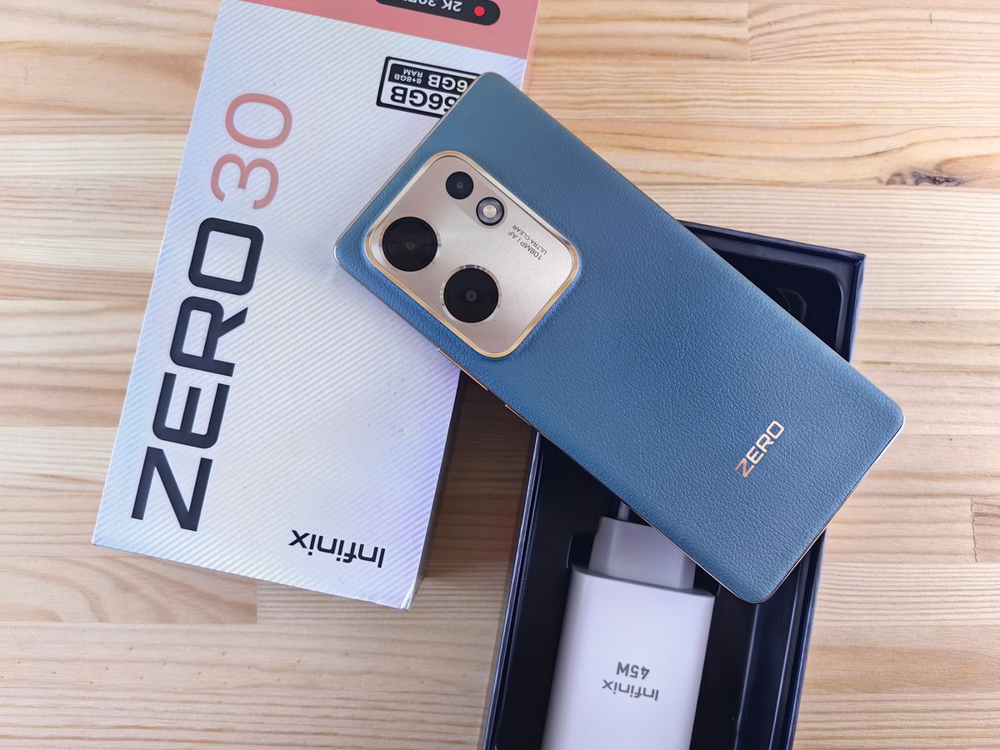

Per November 2026, situs cek IMEI Kemenperin sudah ditutup untuk publik. Untuk HP dari luar negeri, jalur yang masih jalan adalah situs Bea Cukai di beacukai.go.id/imei. Untuk HP yang dibeli di toko Indonesia, kamu memastikan keasliannya lewat kecocokan IMEI di tiga tempat dan cek garansi resmi merek HP. Panduan lama yang menyuruhmu membuka imei.kemenperin.go.id tidak bisa lagi dipakai. Nomor IMEI-nya sendiri mudah ditemukan, ketik *#06# di aplikasi Telepon dan nomor 15 digit itu langsung muncul di layar. Kalau HP-mu barang bawaan dari luar negeri, daftarkan IMEI lewat Bea Cukai paling lambat 60 hari sejak tanggal kedatangan, pendaftarannya gratis, dan aktivasi jaringan biasanya butuh waktu sampai 2 kali 24 jam sesudah pendaftaran berhasil. Kalau IMEI ternyata tidak terdaftar dan HP sudah terlanjur dibeli, hubungi penjual dan minta tukar unit atau pengembalian dana. Sementara menunggu, HP tetap bisa dipakai lewat Wi-Fi, hanya jaringan selulernya yang belum bisa dipakai.
IMEI adalah nomor identitas 15 digit yang dimiliki setiap HP, seperti KTP untuk ponsel. Sejak 2020, pemerintah mewajibkan IMEI perangkat yang memakai jaringan seluler Indonesia tercatat di database resmi. HP yang IMEI-nya tidak terdaftar berisiko kehilangan sinyal, walau HP-nya sendiri normal. Akses publik situs Kemenperin sudah ditutup sejak 2025 dan per November 2026 alamatnya bahkan tidak bisa dibuka. Semua langkah di bawah ini gratis dan memakai jalur resmi. Yang mungkin berbayar hanya bea masuk dan pajak kalau HP-mu memang barang impor yang belum didaftarkan.
Kenapa situs cek IMEI Kemenperin tidak bisa dibuka lagi?
Dulu, situs imei.kemenperin.go.id adalah tempat utama untuk mengecek apakah HP resmi atau bukan. Situs itu dibuat untuk distributor dan importir resmi, dan publik ikut memakainya selama bertahun-tahun. Menurut laporan Kompas TV pada September 2025, akses pengecekan untuk publik sudah ditutup, situs itu kini hanya dipakai pelaku industri dan importir terdaftar. Laporan pada 3 November 2026 menyebut alamatnya bahkan tidak bisa dibuka sama sekali, dan percobaan pada 16 November 2026 mengonfirmasinya. Kemenperin sendiri sempat menonaktifkan sementara layanan digitalnya pada 22 sampai 25 Oktober 2026 karena alasan keamanan siber, menurut laporan Bisnis.com. Intinya, kalau kamu menemukan artikel yang masih menyuruhmu cek IMEI di situs Kemenperin, artikel itu sudah kedaluwarsa. Jangan memasukkan nomor IMEI ke situs lain yang mengaku pengganti Kemenperin, apalagi yang meminta bayaran atau data pribadi.
Bagaimana cara menemukan nomor IMEI HP kamu?
Sebelum mengecek apa pun, kamu butuh dulu nomor IMEI-nya. Cara tercepat berlaku untuk semua HP, Android maupun iPhone. Buka aplikasi Telepon, lalu ketik *#06#. Nomor IMEI langsung muncul di layar tanpa perlu menekan tombol panggil. HP dual SIM menampilkan IMEI1 dan IMEI2, keduanya perlu dicek. Kalau kode itu tidak jalan, cari lewat menu pengaturan. Di iPhone, buka Pengaturan, pilih Umum, lalu Mengenai, dan gulir sampai menemukan IMEI. Di Samsung, buka Pengaturan, pilih Tentang ponsel, lalu Status. Di Xiaomi, Redmi, dan POCO, buka Setelan, pilih Tentang ponsel, lalu Semua spesifikasi. Di merek lain seperti vivo, realme, dan Infinix, polanya sama, cari menu Tentang ponsel atau Tentang perangkat. Nomor IMEI juga tercetak di stiker barcode pada kotak HP, dan di beberapa model tercetak di baki SIM. Cocokkan ketiganya, hasil *#06#, menu pengaturan, dan kotak. Kalau ada yang berbeda, curigai HP itu sudah diutak-atik atau kotaknya bukan pasangan aslinya.

HP dari luar negeri: bagaimana cara cek dan daftar IMEI lewat Bea Cukai?
Kalau HP-mu dibeli di luar negeri atau dibawa dari luar negeri, jalur resminya adalah Bea Cukai. Buka beacukai.go.id/imei di browser, lalu pilih formulir pendaftaran dan cek status IMEI. Masukkan 15 digit nomor IMEI pada kolom yang tersedia. Sistem akan menampilkan status IMEI itu di database Bea Cukai. Alamat lama beacukai.go.id/cek-imei.html sudah tidak berfungsi sejak situs Bea Cukai ditata ulang, jadi pakai alamat yang baru. Pendaftaran IMEI sendiri tidak dipungut biaya, tapi perangkat impor tetap kena kewajiban kepabeanan. Menurut FAQ resmi Bea Cukai, pungutannya bea masuk 10 persen dan PPN 12 persen, dengan pembebasan barang pribadi penumpang senilai 500 dolar AS. Daftarkan IMEI sebelum memasukkan kartu SIM Indonesia, paling lambat 60 hari sejak tanggal kedatangan. Pendaftaran bisa dilakukan lewat Electronic Customs Declaration di ecd.beacukai.go.id sebelum berangkat, atau lewat aplikasi Mobile Bea Cukai. Siapkan paspor, boarding pass, dan bukti pembelian. Sesudah pendaftaran berhasil, aktivasi jaringan oleh operator biasanya butuh waktu sampai 2 kali 24 jam.

HP beli di toko Indonesia: bagaimana memastikan unitnya resmi?
HP yang dijual distributor resmi Indonesia sudah didaftarkan IMEI-nya, jadi kamu tidak perlu mendaftarkan apa pun. Karena pintu cek publik Kemenperin sudah tutup, cara memastikannya berubah. Pertama, cocokkan IMEI di tiga tempat seperti langkah di atas, hasil *#06#, menu pengaturan, dan kotak harus sama. Kedua, cek garansi di halaman dukungan resmi merek HP itu, misalnya samsung.com/id/support untuk Samsung, lalu masukkan IMEI di kolom pencarian dukungan. Kalau IMEI dikenali dan masa garansi tampil, unit itu tercatat di sistem resmi merek tersebut. Ketiga, perhatikan tempat belinya. Beli dari toko resmi atau marketplace official store, dan simpan struk serta kartu garansi. Waspadai harga yang jauh di bawah pasaran dan istilah garansi distributor atau unit inter. Unit seperti itu bukan unit resmi Indonesia, dan sinyalnya bisa hilang kapan saja.

Apa yang harus dilakukan kalau IMEI tidak terdaftar?
Jangan panik, tapi jangan juga mengabaikannya. Kalau kamu belum membayar, jangan beli HP itu dan minta penjelasan tertulis dari penjual. Kalau HP sudah terlanjur dibeli, hubungi penjual dan minta tukar unit atau pengembalian dana, sambil menyimpan semua bukti chat dan struk. Kalau HP itu kamu bawa sendiri dari luar negeri, daftarkan IMEI lewat Bea Cukai sebelum batas 60 hari sejak kedatangan, lengkap dengan paspor dan bukti pembelian. Jangan tergoda jasa yang menjanjikan IMEI langsung terdaftar dengan bayaran. Pendaftaran resmi hanya lewat Bea Cukai untuk barang bawaan penumpang dan lewat distributor resmi untuk HP yang dijual di Indonesia, tidak ada jalur instan lain. Sementara menunggu pendaftaran selesai, HP tetap bisa dipakai lewat Wi-Fi, hanya jaringan selulernya yang belum bisa dipakai.
Cek IMEI hanya butuh beberapa menit, tapi bisa menyelamatkanmu dari HP yang tiba-tiba kehilangan sinyal. Kalau kamu baru ganti HP, baca juga panduan memindahkan kontak dari HP lama ke HP baru supaya tidak ada nomor yang hilang, dan backup WhatsApp sebelum ganti HP supaya riwayat chatmu aman.
Sumber dan Info Resmi
Angka dan tanggal di artikel ini merujuk ke sumber berikut:
- Wawasanku: kode *#06# menampilkan IMEI tanpa tombol panggil; letak menu IMEI di iPhone dan Android; IMEI1 dan IMEI2 di HP dual SIM; HP luar negeri wajib daftar IMEI lewat Bea Cukai; HP tanpa IMEI terdaftar tetap bisa dipakai lewat Wi-Fi.
- Ahmadweb: situs imei.kemenperin.go.id sudah ditutup untuk umum sejak September 2025 menurut laporan Kompas TV, dan per November 2026 tidak bisa dibuka; alamat cek IMEI Bea Cukai yang masih jalan adalah beacukai.go.id/imei; batas daftar IMEI 60 hari sejak kedatangan.
- Bea Cukai: FAQ pendaftaran IMEI, bea masuk 10 persen dan PPN 12 persen, pembebasan barang pribadi penumpang senilai 500 dolar AS, dasar aturan PER-13/BC/2021 jo. PER-7/BC/2023.
- Erablue: layanan cek IMEI Kemenperin kini hanya untuk pengecekan realisasi industri dan importir HKT terdaftar, pengecekan untuk publik sudah ditutup.
- Nihon.id: Kemenperin menonaktifkan sementara layanan digitalnya pada 22 sampai 25 Oktober 2026 karena kerentanan PHP2Shell, merujuk laporan Bisnis.com.
- Labviral: daftar IMEI lewat situs Bea Cukai ecd.beacukai.go.id dan aplikasi Mobile Bea Cukai, siapkan paspor, boarding pass, dan invoice.
- Pengadaanbarang.co.id: registrasi IMEI gratis, aktivasi jaringan sampai 2 kali 24 jam sesudah pendaftaran berhasil, batas pendaftaran 60 hari sejak kedatangan.
- Ponsel Jakarta: regulasi pengendalian IMEI berlaku sejak September 2020, HP tidak terdaftar berisiko diblokir sinyal.
- Wigatos: cek garansi lewat situs dukungan resmi merek, misalnya samsung.com/id/support.